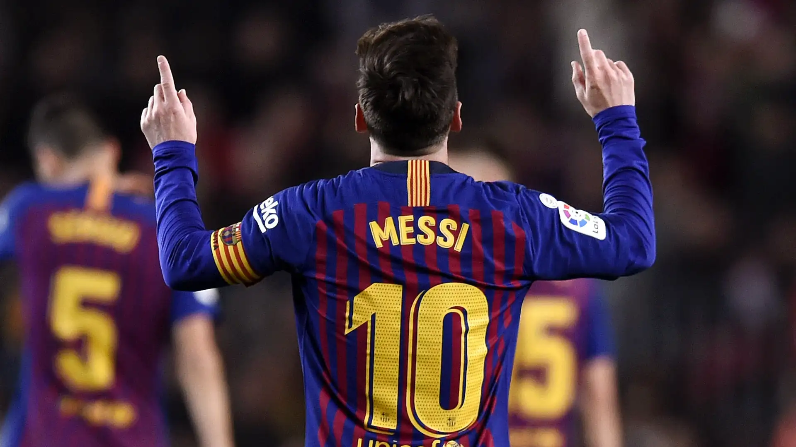

Cristiano Ronaldo es uno de los futbolistas más talentosos y exitosos de la
historia.
Su habilidad en el campo, su ética de trabajo y su mentalidad
competitiva lo han llevado a romper innumerables competiciones
internacionales. A nivel técnico, tiene una gran capacidad para marcar goles desde cualquier posición.

Lionel Messi es considerado uno de los mejores futbolistas de la
historia. Su talento, creatividad y habilidad
con el balón lo han convertido en un ícono del deporte.
A pesar de su pequeña estatura, Messi es capaz de driblar a rivales
con facilidad y marcar goles espectaculares.